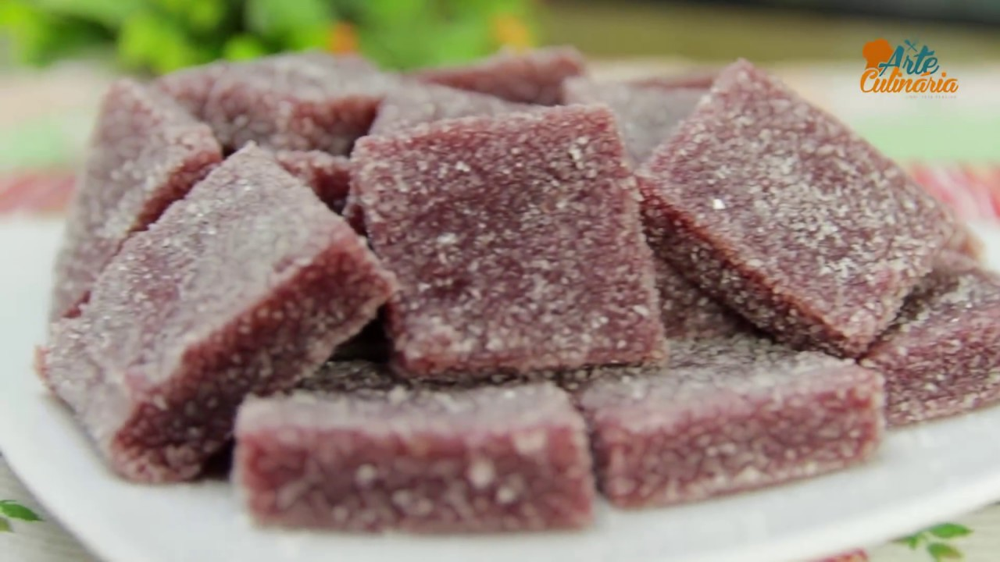

Doce de Banana de corta

Um doce muito gostoso
Ingrdientes
- 10 bananas nanicas
- uma chicara de açucar mascado
- 1 envelope de gelatina sem sabor em pó
- manteiga para untar
- açúcar para polvilhar e envolver
Passos
- Comece por descascar as bananas e colocar em uma panela junto com o açúcar. Este é o primeiro passo do doce de banana de cortar.
- Leve a panela ao fogo médio e fique mexendo até desfazer as bananas e elas virarem uma mistura marrom que desgruda do fundo, como um brigadeiro de panela.
- Após o passo anterior, desligue o fogo e deixe esfriar um pouco seu doce de banana. Enquanto isso, hidrate a gelatina em 1-2 colheres de sopa de água e, quando estiver durinha, esquente ligeiramente no microondas ou no fogo e adicione à mistura de banana.
- Transfira a mistura do doce de banana de cortar para uma travessa untada com manteiga e polvilhada com açúcar. Deixe esfriar por completo e, depois, na geladeira por 4-5 horas.
- Quando o doce de banana para cortar já estiver bem firme, pode cortar e passar no açúcar. Delicie-se com essa bala caseira e diga nos comentários abaixo o que achou. Bom apetite!